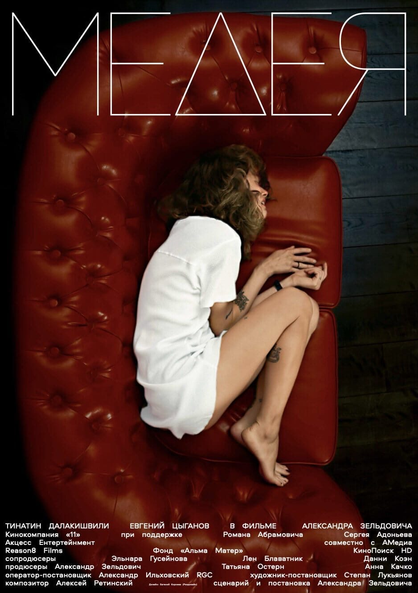

Последние тексты
все тексты →Культурные исследования Европы в пользу славного народа Палестины, или «Должно быть, это рай»
Элиа Сулейман снял фильм, в котором герой почти ни на что не влияет — и именно поэтому зритель остаётся наедине с собственными выводами.

Двое на качелях. Где здесь я и нужен ли я
Отзыв, написанный не для того, чтобы порекомендовать, а чтобы отрефлексировать увиденное — по горячим следам премьеры в театре им. Ленсовета.

В поисках вдохновения, или Как жить среди роботов и не сойти с ума
О рождении спектакля «Робот Костя» — первого в России роботического театра, где Чеховские страсти оказались подвластны и роботам.
Вера Полозкова — «Высокое разрешение»
Стихи, которые с каждым разом находят всё большее дыхание в музыке — и слушать их становится интереснее, чем многие песни.
Как не сойти с ума в этом мире, и ход королевы по правилам и без
«Ход королевы» сделал шахматы доступными даже для тех, кто брал в руки ферзя пару раз в жизни.

Красота в глазах смотрящего, или Дом Радио — иррациональный и величественный
С приездом Теодора Курентзиса абсолютом города стал Дом Радио. Текст о пространстве, в которое приходишь, чтобы измениться.